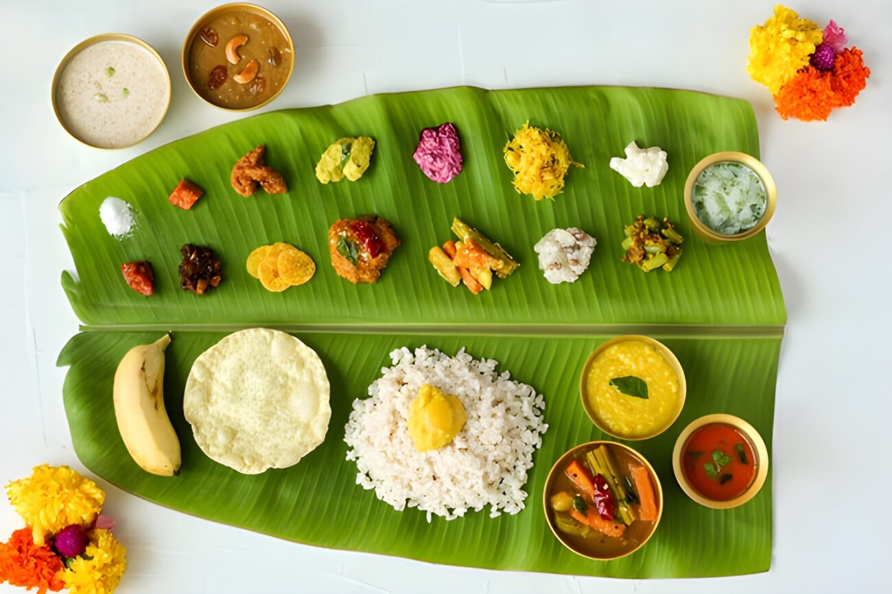
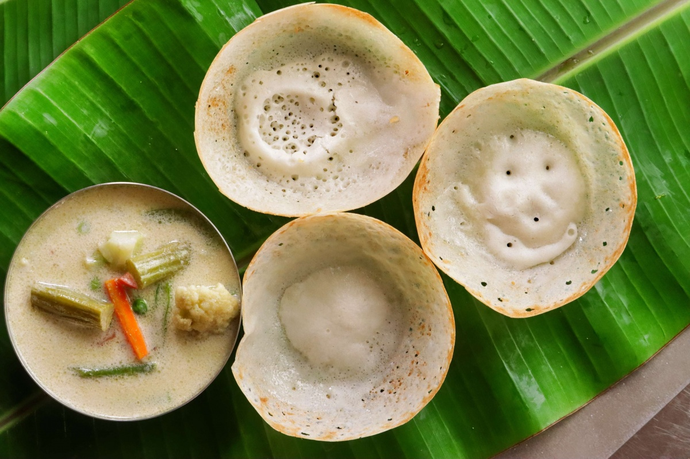
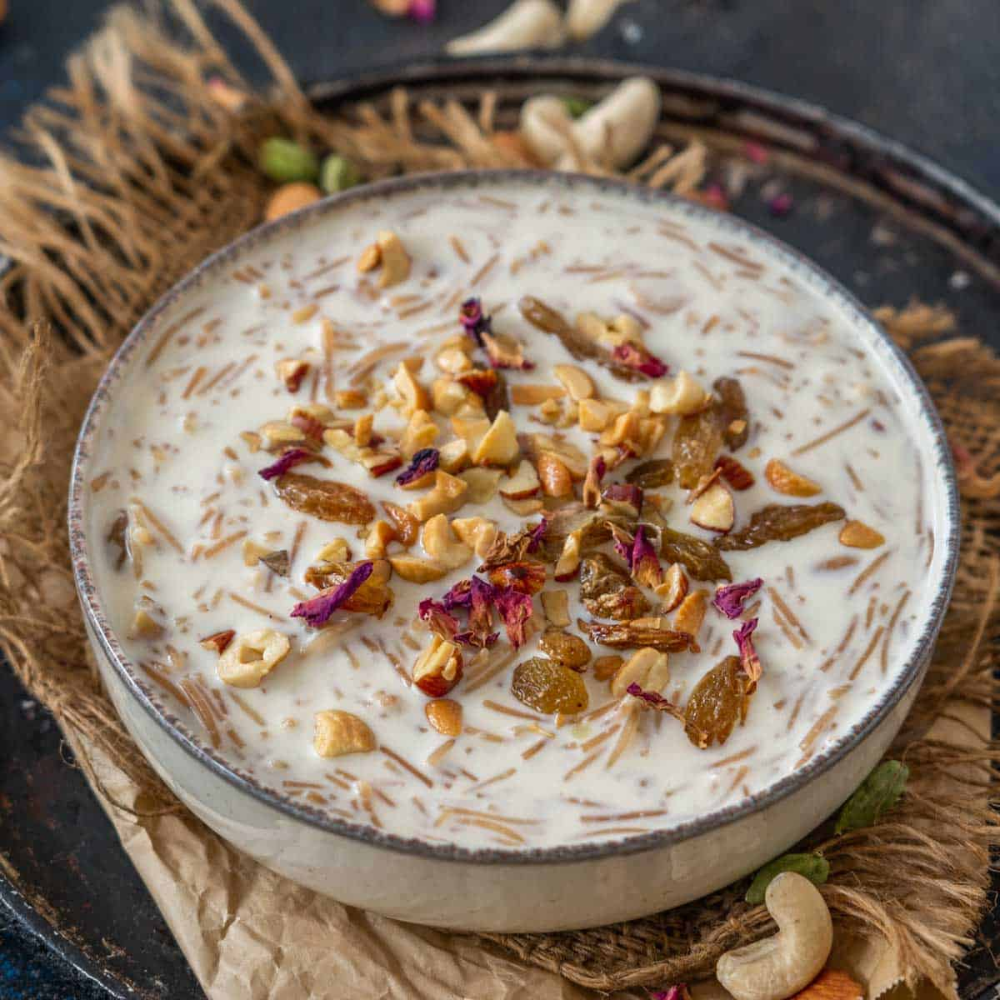
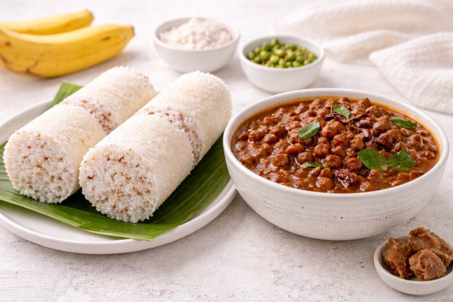
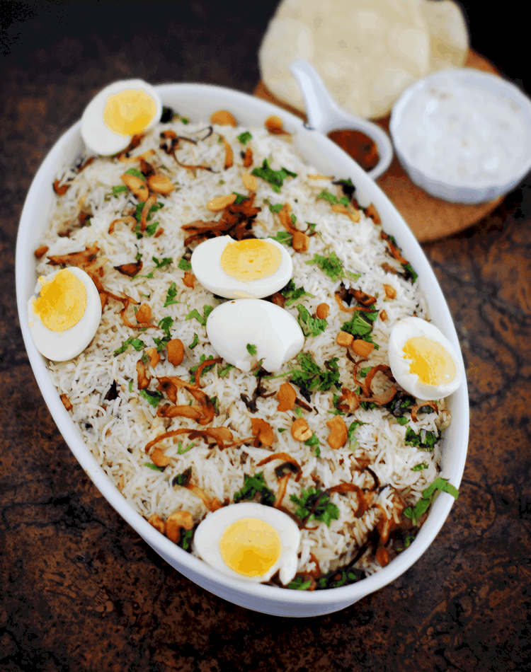
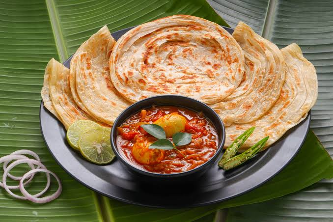
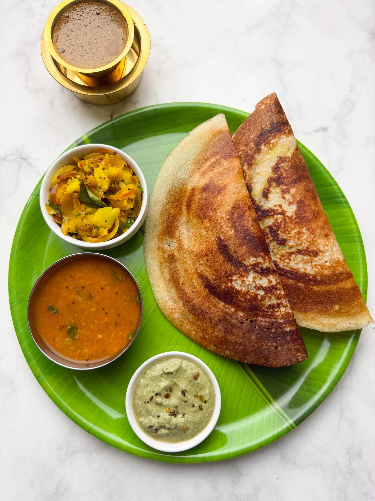
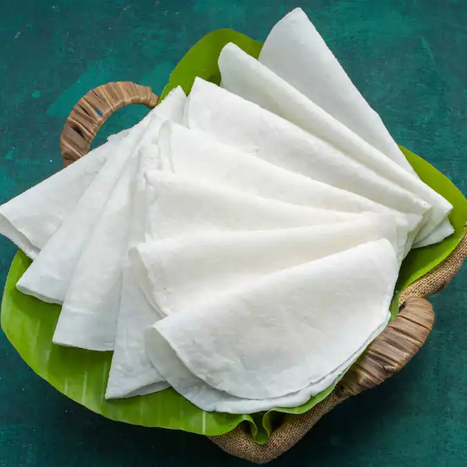

TRADITIONALKerala Sadya
A grand vegetarian feast featuring rice, curries, vegetables, pickles and traditional side dishes.
EXPLORE KERALA CUISINE
From comforting breakfasts to festive feasts, explore dishes that bring Kerala's food culture to life.
TASTE THE TRADITION
Browse the collection, search for a dish, or filter by category. Each card includes a quick description and a closer look option.
OUR COLLECTION

TRADITIONALA grand vegetarian feast featuring rice, curries, vegetables, pickles and traditional side dishes.

BREAKFASTSoft and fluffy rice pancakes with beautifully crisp edges, often served with rich Kerala curries.
 SEAFOOD
SEAFOODA bold and spicy fish curry prepared with traditional Kerala spices and tangy flavours.

DESSERTA traditional sweet dessert made with ingredients such as rice, milk, jaggery and coconut.

BREAKFASTSteamed rice cakes served with a deliciously spiced black chickpea curry.

MAIN COURSEFragrant rice layered with aromatic spices and a richly flavoured meat preparation.
 SNACK
SNACKThin slices of Kerala banana fried until golden, crisp and delicious.
 MAIN COURSE
MAIN COURSETender chicken cooked with coconut, spices and traditional Kerala flavours.
 MAIN COURSE
MAIN COURSETender beef cooked with aromatic spices, curry leaves and traditional seasonings.

FAVOURITESoft, layered and flaky flatbread enjoyed with rich curries and gravies.

BREAKFASTA thin and crispy fermented rice pancake commonly enjoyed with curry or chutney.

TRADITIONALA soft rice flatbread that pairs beautifully with spicy Kerala meat and vegetable curries.
Try another search or choose a different category.
HUNGRY FOR MORE?
Kerala's cuisine is more than food. It is a celebration of tradition, family and culture.
Discover Kerala's Food Culture